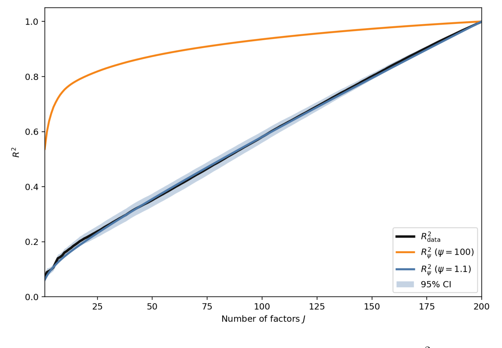
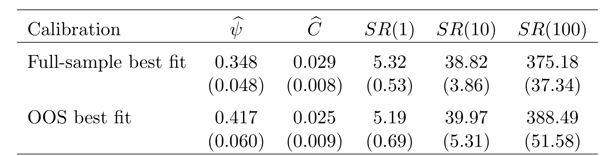
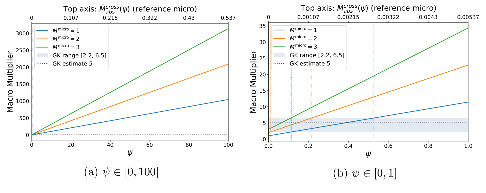
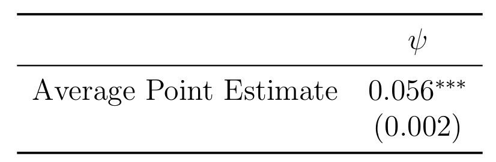
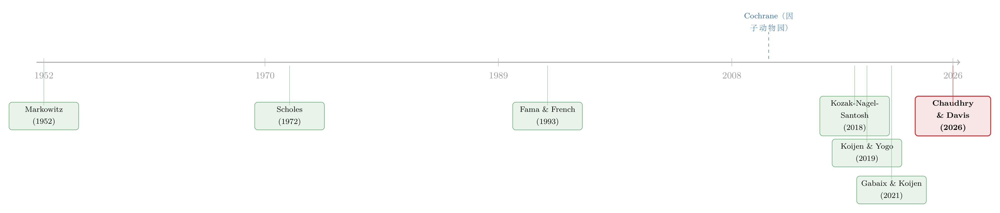

弱替代：因子动物园是从哪里冒出来的？
这篇文章我读 Chaudhry and Davis (2026, SSRN)。他们提出了一个看似简单、却足以重写我们对横截面预期收益直觉的论断：投资者把单只股票当作弱替代品 (weak substitutes)——他们并不会因为两只股票预期收益拉开了差距，就在二者之间大举调仓。而正是这种「懒得替代」，从根上解释了困扰资产定价二十年的「因子动物园」(factor zoo)。作者把替代强度浓缩进一个参数 \(\psi\)，经典模型校准出 \(\psi=100\)，而从收益、价格乘数、价格弹性三条独立证据估出来的 \(\psi\)，统统落在 \(0.06\) 到 \(1.1\) 之间——比经典值小了两到三个数量级。
1 一个悬念：因子为什么越数越多？
先从一个困扰整个领域的现象说起。
自 Fama and French (1993) 用三个因子（市场、规模、价值）就解释了横截面收益之后，资产定价的研究者一度乐观地相信：股票预期收益的差异，归根结底由少数几个共同因子驱动。然而接下来的三十年，事情完全朝相反的方向发展。一个又一个新因子被发掘出来，到 Cochrane (2011) 在他著名的主席演讲里发出那句感慨时，这群越养越多的因子已经被半戏谑地称作「因子动物园」（Cochrane 那场主席演讲本身极值得一读，我单独写过：《贴现率：资产定价的中心议题》）。今天，如果你用 Random Fourier Features 把上百个公司特征做非线性展开，能轻松刨出几百个能预测收益的方向。
这就形成了一个尖锐的张力。一方面，经典资产定价理论告诉我们：能解释收益的因子不该这么多。另一方面，经验事实却是——你需要成百上千个因子，才能把横截面预期收益的变化讲清楚（Lettau and Pelger, 2020）。
到底哪里出了问题？过去人们给过各式各样的局部答案：套利限制、卖空约束、交易成本、对预期收益的不确定性……但这些解释像散落的拼图，各说各话。Chaudhry and Davis 这篇论文的野心，是用一个统一的机制把它们全部串起来。而这个机制，归结为一个再朴素不过的问题。
2 真正的那一个问题：替代是强还是弱？
这个问题是：投资者究竟把不同的股票当作彼此接近的替代品，还是当作很弱的替代品？
让我们把它讲透。设想股票 A 的预期收益相对股票 B 上升了。如果投资者把 A、B 看作强替代品 (close substitutes)，他会立刻、且大幅地从 B 调仓到 A;这种激进的再配置会迅速把 A 的价格抬上去、把它的预期收益压回来。结果是：凡是协方差结构相近的股票，预期收益必然被拉到接近的水平。于是，那几个贡献了最多协方差的强因子，也就顺理成章地解释了大部分预期收益的差异——因子不该多。
可如果投资者把股票看作弱替代品呢？此时即便 A、B 预期收益分道扬镳，他也只是懒洋洋地微调一下仓位。套利的力量被削弱，预期收益于是可以散落在许许多多个方向上——包括那些对协方差几乎没有贡献的「弱因子」。
你看，谜底已经呼之欲出了：因子动物园，本质上就是「弱替代」在横截面收益上投下的影子。作者把这一点提炼成了一个漂亮的「当且仅当」命题——因子动物园存在，当且仅当投资者弱替代。这不是一个比喻，而是一个可以从模型里严格推出的等价关系。下面我们就钻进这个模型。
3 模型：一项 \(\ell_2\) 惩罚，如何把替代「掐住」
作者的模型在 Kozak et al. (2018a) 的基础上做了一个看似很小、却四两拨千斤的改动。
3.1 设定
经济里有 \(N\) 只股票、两期。每只股票 \(n\) 在第二期支付一笔有风险的红利：
$$D_n = g_n + \theta_n' F + \varepsilon_n$$
这里 \(F \in \mathbb{R}^{K+1}\) 是一组正交的共同因子，其方差为对角阵 \(\mathbb{V}[F]=E\equiv \mathrm{diag}(e_k)_{k=0}^{K}\)，特征值按降序排列 \(e_0 \ge \cdots \ge e_K\);\(e_k\) 越大，第 \(k\) 个因子贡献的协方差越多，是越「强」的因子。\(\varepsilon_n\) 是特质收益，\(\mathbb{V}[\varepsilon_n]=\sigma^2\)。因子载荷 \(\Theta=[\theta_n']_{n=1}^{N}\) 是正交归一的，\(\Theta'\Theta = I\);第一个因子 \(k=0\) 是市场因子，对横截面差异没有贡献。
把所有股票的红利和价格写成向量 \(D=[D_n]\)、\(P=[P_n]\),代表性投资者需要吸收的（残余）供给为每只股票 \(1/N+\theta_n'\pi\) 股,其中 \(\pi\) 控制每个因子的供给。无风险利率归一化为零。
3.2 关键的那一个方程
模型的全部张力，都压在投资者的目标函数里。这就是我想用「标注公式」逐块拆给你看的那个核心方程：
要害全在 \(a3\) 这一项。Kozak et al. (2018a) 的原模型令 \(\lambda=0\),于是替代完全由风险（也就是 \(a2\) 里的协方差）决定。Chaudhry and Davis 把 \(\lambda\) 放了回来,它代表了一切与风险无关的动机 (non-risk motives):对预期收益与协方差的不确定性、基准（benchmarking）与调整成本之类的摩擦、乃至「相关性忽视」「窄框架」之类的行为偏差。这些微观基础看上去五花八门,却共享同一个含义——它们都给投资者一个风险厌恶之外的理由,使其不去充分榨取高预期收益的机会。
3.3 一步步推出均衡
模型的好处是干净到可以手推。对 \(Q\) 求一阶条件：
$$\mathbb{E}[D-P]-\gamma\,\mathbb{V}[D]\,Q-\lambda Q = 0$$
解出最优持仓（需求）：
$$Q = \big(\gamma\,\mathbb{V}[D]+\lambda I\big)^{-1}\mathbb{E}[D-P]$$
看这一步就能体会 \(\lambda\) 的作用：它在协方差矩阵上「加了一条对角线」。即便两只股票的协方差结构一模一样(\(\gamma\mathbb{V}[D]\) 那部分让人想替代),\(\lambda I\) 也会拦着你,不让你在其中任何一只上压太重的仓位。替代,就这样被掐住了。
接着求均衡。由 \(D=g+\Theta F+\varepsilon\) 可知 \(\mathbb{V}[D]=\Theta E\Theta'+\sigma^2 I\)。代表性投资者吸收全部供给,把均衡持仓 \(Q\) 代回一阶条件,得到定价方程：
$$\mathbb{E}[D-P]=\big(\gamma(\Theta E\Theta'+\sigma^2 I)+\lambda I\big)\,Q$$
最后,用正交归一的载荷 \(\Theta\) 把它投影到因子空间(利用 \(\Theta'\Theta=I\)),就得到了整篇论文的「心脏」——每个因子 \(k>0\) 的均衡风险溢价：
$$f_k=\big(\gamma(e_k+\sigma^2)+\lambda\big)\,\pi_k$$
请盯住这个式子看几秒钟。一个因子对协方差的贡献,完全由特征值 \(e_k\) 决定;可它对预期收益的贡献,系数却是 \(\gamma(e_k+\sigma^2)+\lambda\)。
- 当 \(\lambda=0\)(强替代),系数是 \(\gamma(e_k+\sigma^2)\)。强因子(\(e_k\) 大)拿到大溢价,弱因子(\(e_k\approx 0\))的溢价被压到 \(\gamma\sigma^2\) 那么小——预期收益高度集中在少数强因子上。
- 当 \(\lambda\) 很大(弱替代),那个不随 \(e_k\) 缩水的常数项 \(\lambda\) 开始主导。强因子和弱因子的溢价系数变得彼此接近——于是预期收益散落到一大堆因子上,因子动物园就此诞生。
作者把整体替代强度浓缩成单一参数 \(\psi\),直观上它衡量投资者把多大权重放在「降低组合波动」(\(\gamma\))、相对于「与风险无关的动机」(\(\lambda\))上。在没有惩罚的经典均值-方差基准里,\(\psi\) 恰好是特质方差的倒数 \(1/\sigma^2\),作者据此校准出基准值 \(\psi=100\)。\(\psi\) 越大,替代越强;\(\psi\) 越小,替代越弱。整篇论文接下来要做的,就是从数据里把这个 \(\psi\) 估出来。
4 第一条证据：\(R^2\) 爬得太慢了
第一条证据直接来自收益本身。
作者用 Kelly et al. (2019) 的工具化主成分 (IPCA) 方法估计已实现收益的因子结构,所用特征是把 120 个月度公司特征经 Random Fourier Features 做非线性变换后得到的,最终提取出 200 个潜在因子及其特征值。然后做一件很聪明的检验:把未来收益横截面地回归在股票层面的因子载荷上,一个因子一个因子地往里加,看解释力 \(R^2\) 怎么往上爬。
理论预言很清楚:如果替代是强的,那么贡献协方差最多的那几个因子(特征值最大的)应该立刻把 \(R^2\) 拉满,曲线应当陡峭地冲顶。可数据里的曲线,爬得慢得多——需要成百上千个因子,\(R^2\) 才慢慢累积起来,其中许多因子对协方差几乎毫无贡献。根据这条曲线相对于强替代基准的「平坦」程度,作者反推出 \(\psi=1.1\),比基准 \(\psi=100\) 小了两个数量级。

Figure 1: The black data curve is the normalized cross-sectional R2 from regressing next
为了打消「这是 RFF 或 IPCA 的特定产物」的疑虑,作者换用标准主成分(采用 Zhou and Chen, 2025 的去偏异方差 PCA),分别在个股日度收益、以及 Kozak et al. (2018a) 的 56 个特征排序组合上重做,结论一致:少数因子就能解释绝大部分协方差,却要很多因子才能解释预期收益的横截面差异。这正是弱替代的指纹。
5 反转一:夏普比率的「二选一」困境
读到这里,一个自然的反驳会浮现:如果弱因子真的也带着可观的预期收益,那把它们全部打包,岂不是能构造出一个夏普比率高到离谱的策略?换句话说,弱替代不会反而制造出近似套利的机会吗?
作者的回答漂亮地完成了一次反转:恰恰相反。在固定自身价格弹性的前提下,替代越弱,模型隐含的最大可得夏普比率反而越低。直觉就藏在最大可得夏普比率的表达式里（论文 3.3 节）：
$$\text{Maximum Sharpe Ratio}^2 = C \sum_{k=0}^{K} \frac{(1+\psi e_k)^2}{e_k + \sigma^2}$$
弱替代源于低风险厌恶,它带来的是「许多因子上又低又分散」的预期收益,而不是「少数因子上又高又集中」的预期收益。把所有因子的溢价都压低,最大夏普比率自然也被压低,近似套利的口子也就被堵上了。
反过来,如果你坚持认为替代是强的,那么基于同一个估计出来的因子模型,无论样本内还是样本外,都会推出高到不真实的夏普比率。于是这里有一个「二选一」(pick your poison) 的两难:要么夏普比率大到与现实不符,要么替代是弱的。数据选了后者。

Table 2: Sharpe-ratio estimation results
6 反转二:宏观乘数会被「弱替代」之外的假设撑爆
第二个「二选一」来自价格乘数的微观与宏观之比,我个人觉得这是全文最有说服力的一击。
先定义清楚。微观乘数(micro multiplier)为 2,意思是买入某只股票 1% 的流通股,会把它的价格抬高 2%;宏观乘数(macro multiplier)为 2,则是买入整个股市 1% 的市值,把大盘抬高 2%。强替代意味着跨股票价格乘数(cross-price multiplier)很大——买 A 的股票会显著推高 B 的价格。
关键的算术在这里。假设个股自身乘数是 1、跨股票乘数是 0.1,那么买入整个市场 1% 的市值,会把市场推高
$$1\% + 0.1\% \times (N-1)$$
当 \(N=2000\) 只股票时,这个宏观乘数大约是 200——远远大于 Gabaix and Koijen (2021) 等人在「非弹性市场假说」里给出的经验估计(量级在个位数)。作者把这个论证推广到允许丰富替代模式的一般情形,直觉不变:要么宏观乘数大到不真实,要么跨股票替代必须很弱。用 GMM 把这个逻辑顶到数据上,估出来的替代参数是 \(\psi=0.06\),比基准小了整整三个数量级。

Figure 3: Implied macro multiplier Mmacro(ψ) as a function of the degree of substitution ψ

Table 5: ψ 的 GMM 估计——按式 (36) 逐季估计后取时序平均，括号内为 Fama–MacBeth 标准误。
7 直接测量:跨股票乘数与跨股票弹性都小得惊人
前面两节是「反证」——说替代必须弱,否则某些量会爆掉。最后两节,作者干脆直接把替代测出来。
从价格乘数测(第 7 节)。作者借用三个相对干净、与基本面无关的需求冲击:Russell 指数重构前后的基准化强度变化(Pavlova and Sikorskaya, 2023)、共同基金资金流诱发的交易(Lou, 2012)、以及订单流失衡(Li and Lin, 2025)。结论分两半:自身价格乘数很大——三个冲击下,买入某股 1% 流通股使其价格上升 1% 到 3%,与既有文献一致;但跨股票乘数极小——比自身乘数小了两到四个数量级。通过模型的透镜换算,对应的 \(\psi\) 落在 0.1 到 1.0 之间。
从价格弹性测(第 8 节)。作者用 SEC Form 13F 的机构持仓数据,估计机构投资者的跨股票需求弹性:当其他股票出现外生的价格变动时,投资者如何调整对某只股票的持仓。答案同样是小——跨股票弹性比自身的微观弹性小两到四个数量级,对应 \(\psi\approx 0.1\)。
把四条独立的证据并排放在一起,\(\psi\) 的估计值横跨 \(0.06\)、\(0.1\)、\(1.0\)、\(1.1\),无一例外地比经典基准 \(\psi=100\) 小了两到三个数量级。这种来自完全不同数据与方法的「众口一词」,是我觉得这篇论文最有分量的地方。
8 文献脉络
把这篇论文放回它生长的那条藤蔓上,故事会更清楚。
最早,Markowitz (1952) 的洞见是把投资者从「孤立地挑股票」拽到「基于协方差选组合」——这是组合理论的一大步,也埋下了「股票应当彼此替代」的种子;Scholes (1972) 进一步论证,股票不同于艺术品,是对终将同质的现金流的索取权,因此理应是良好的替代品。这条「强替代」的传统,经 Fama and French (1993) 的因子模型发扬光大。

可经验世界并不配合。Cochrane (2011) 把越养越多的因子命名为「因子动物园」,成了一个标志性事件（这场演讲我单独写过：《贴现率：资产定价的中心议题》）;Lettau and Pelger (2020) 等人随后用高维因子模型确认:简约模型只能解释一小部分横截面预期收益,复杂模型则好得多。与此并行,需求体系资产定价(demand-system asset pricing) 这条线悄然崛起——Koijen and Yogo (2019) 开创性地把资产定价写成一个需求体系,Gabaix and Koijen (2021) 则用「非弹性市场假说」论证自身价格弹性很小、价格乘数很大。
Chaudhry and Davis (2026) 站在这两条线的交汇处。他们做的,是把第一条线上的「因子动物园」之谜,和第二条线上的「替代/弹性」工具箱焊接起来:用需求体系去测股票横截面的替代强度,并证明正是这种弱替代,从均衡上孕育了因子动物园。据我所知,这是第一篇直接为个股测量跨股票价格弹性与跨股票价格乘数的工作。
9 我的判断
先说贡献。这篇论文最打动我的,是它的统一性与过度识别。它没有发明新的摩擦,而是指出套利限制、基准化、行为偏差这些看似各异的机制,在数学上都归结为对持仓的一项 \(\ell_2\) 惩罚,从而都落在「弱替代」这一个旋钮上。更难得的是,收益、夏普比率、宏观乘数、跨股票乘数、跨股票弹性——五条几乎正交的证据,把 \(\psi\) 同时压到了同一个狭窄的区间。这种近乎「过度识别」的一致性,远比任何单一回归更有说服力。那个「二选一」的论证框架尤其优雅:它不直接估参数,而是逼着你承认「除非替代很弱,否则某个可观测量会大到荒谬」。
再说我对识别的担忧。第一,整套定量映射高度依赖那个 \(\ell_2\) 惩罚的函数形式——作者在附录 A.5 用更一般的偏好做了稳健性检验,但「把不确定性、基准、窄框架统统等价为 \(\ell_2\) 惩罚」这一步,既是优雅,也可能是过度简化:不同微观基础的可加性、对称性未必真的成立,而 \(\psi\) 的具体数值对此恐怕并非不敏感。第二,从跨股票乘数/弹性反推 \(\psi\),关键在于那三个需求冲击是否真的「与信息无关」;Russell 重构、基金资金流、订单流失衡各有各的内生性顾虑,若冲击里掺了对基本面的信息,跨股票反应被低估,\(\psi\) 就会被系统性地往小了估。第三,\(\psi\) 的四个估计值从 \(0.06\) 到 \(1.1\) 横跨了一个数量级——相对于「对抗 100」当然都算小,但它们之间一个数量级的离散,本身或许就在提示替代强度存在重要的异质性,而非一个干净的常数。
最后说我想看到的。其一,把替代强度做成时变的:在流动性枯竭、去杠杆的时点,投资者大概会变得更「孤立」,\(\psi\) 是否随之坍缩?这对理解危机中的价格脱锚很关键。其二,跨资产类别的对照——作者引用的相关工作已在公司债、国债、汇率市场发现替代远非完美(Chaudhary et al., 2023),那么个股的 \(\psi=0.1\) 究竟算高还是算低,需要一把跨市场的尺子。其三,如果替代真的这么弱,那么资金流对价格的影响就主要是局部的(自身价格弹性主导),这对理解为什么大量现金被攥在手里、又如何缓慢回流到资产价格,有直接的含义(关于资金与价格的关系,也可参见《1.7 万亿美元的现金被解锁之后:企业为什么宁可攥在手里?》)。
无论如何,这是我近来读到的、把「需求体系」与「因子动物园」两条大河汇到一处的最干净的一篇。它给了那座越养越大的动物园一个出乎意料地简单的出身证明:不是因子太多,而是投资者太懒得替代。
参考文献
- Chaudhry, A. and Davis, C. (2026). The Origins of the Factor Zoo: Investors Weakly Substitute Across Stocks. SSRN Electronic Journal / Fisher College of Business WP 2026-03-008.
- Cochrane, J. H. (2011). Presidential Address: Discount Rates. Journal of Finance 66(4), 1047–1108.
- Fama, E. F. and French, K. R. (1993). Common Risk Factors in the Returns on Stocks and Bonds. Journal of Financial Economics 33(1), 3–56.
- Gabaix, X. and Koijen, R. S. J. (2021). In Search of the Origins of Financial Fluctuations: The Inelastic Markets Hypothesis. Working Paper.
- Kelly, B. T., Pruitt, S. and Su, Y. (2019). Characteristics Are Covariances: A Unified Model of Risk and Return. Journal of Financial Economics 134(3), 501–524.
- Koijen, R. S. J. and Yogo, M. (2019). A Demand System Approach to Asset Pricing. Journal of Political Economy 127(4), 1475–1515.
- Kozak, S., Nagel, S. and Santosh, S. (2018a). Interpreting Factor Models. Journal of Finance 73(3), 1183–1223.
- Lettau, M. and Pelger, M. (2020). Factors That Fit the Time Series and Cross-Section of Stock Returns. Review of Financial Studies 33(5), 2274–2325.
- Lou, D. (2012). A Flow-Based Explanation for Return Predictability. Review of Financial Studies 25(12), 3457–3489.
- Markowitz, H. (1952). Portfolio Selection. Journal of Finance 7(1), 77–91.
- Pavlova, A. and Sikorskaya, T. (2023). Benchmarking Intensity. Review of Financial Studies 36(3), 859–903.
- Scholes, M. (1972). The Market for Securities: Substitution versus Price Pressure and the Effects of Information on Share Prices. Journal of Business 45(2), 179–211.
10 评论与延伸（Q&A + 研究方向）
几个可能的疑问
Q1：弱替代和「有限套利／套利限制」是一回事吗？
不完全。本文的 ℓ2 惩罚是一个 reduced-form 的总体刻画，它可由很多截然不同的微观基础生成——对均值／协方差的贝叶斯收缩、基准化与调整成本、卖空约束，乃至窄框架等行为偏差。作者刻意不区分来源，只测一个总体替代强度 \(\psi\)。所以「弱替代」是这些摩擦在需求侧留下的共同投影，而非某一种特定机制。
Q2：基准 \(\psi=100\) 凭什么拿来当尺子？
它不是估出来的，而是理论参照点：在没有 ℓ2、纯均值-方差、特异波动率约 \(10\%\) 时，\(\psi=1/\sigma^2\approx100\)，代表「教科书式强替代」。把估计值 \(0.06\!-\!1.1\) 与它对比，是要说明现实离强替代有多远（两到三个数量级），而不是说 100 本身是某个经验事实。
Q3：弱替代难道不该意味着遍地套利（高得离谱的夏普比率）？
直觉如此，但作者证明恰恰相反：固定自价格弹性时，替代越弱，模型隐含的最大可得夏普比率反而越低——弱替代源于更低的有效风险厌恶，带来「许多因子上又低又分散」的溢价，整体夏普比率被压低，近似套利的口子被堵上。
Q4：三条证据会不会只是同一个偏误的三个影子？
它们的数据与识别彼此独立：因子结构用 IPCA 的已实现收益、跨价格乘子用三个「不含信息」的需求冲击、跨价格弹性用 13F 持仓。三条路殊途同归地把 \(\psi\) 按在远小于 100 处，这正是稳健性所在。
Q5：那「因子动物园」就不是数据挖掘／p-hacking 了？
本文给的是一个均衡解释：大量弱因子带着可观溢价，不必是统计假象，而可以是弱替代的指纹。但这并不反过来证明所有异象都「真」——它只说明，「需要很多因子」这件事本身，在弱替代下本就该发生。
Q6：这对需求体系资产定价（Koijen–Yogo 一脉）的方法论争议意味着什么？
有人担心这些模型为可处理性而粗糙地限制替代，会把自价格弹性压偏。本文的小 \(\psi\) 恰恰说明：既然真实替代本就很弱，这种「过度限制」造成的偏误其实很小——算是部分正名。
几个可能的研究问题与提案
-
公司债市场里的弱替代。
- 经济故事：债券投资者（保险公司、共同基金）受 mandate、评级门槛与监管资本约束，跨券替代很可能比股票更弱；若如此，信用利差里也应存在一座「因子动物园」，且自／跨价格乘子的反差更极端。
- 可行性（高）：TRACE 成交 + NAIC／Lipper 持仓可估 \(\psi\)；评级边界、指数重构（ICE／Bloomberg）提供「不含信息」的需求冲击。
-
替代强度的投资者异质性与时变。
- 经济故事：指数化的上升是否在降低总体替代、从而放大因子动物园？指数 vs 主动 vs 散户贡献的 \(\psi\) 是否不同？
- 可行性（中高）：13F 按机构类型拆分 + Russell 重构作外生冲击，估 \(\psi_t\) 的趋势。
-
异象的「发表后衰减」对应 \(\psi\) 的上升吗？
- 经济故事：异象发表后收益衰减常被归因于套利进入；在本文框架里，这应表现为该方向上替代变强（\(\psi\) 上升）。
- 可行性（中）：需把已知异象映射到因子方向并估计发表前后的有效替代；识别较精细，但数据齐备。
-
跨国 \(\psi\) 与所有权结构（外资占比）。
- 经济故事：外资比重高、被动资金多的市场，替代强度是否系统性不同？这能把「市场微观结构 → 因子数量」连起来。
- 可行性（中）：FactSet／EPFR 国际持仓 + 各国因子结构；跨国识别有噪声，但适合横截面对比。
-
能否把 \(\psi\) 拆回它的微观基础？
- 经济故事：贝叶斯收缩、基准化、卖空约束、行为偏差都会压低 \(\psi\)，它们对横截面与时序应有不同的可检验含义。
- 可行性（偏低）：需要额外识别矩或自然实验来区分来源，是更长线的题目。